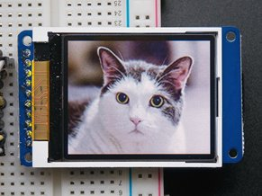
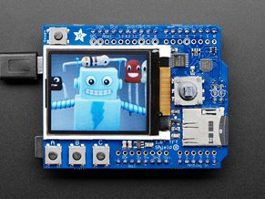

Sommaire
- LE MATERIEL
- Les modules Adafruit 1,8'' Color TFT Shield et Breakout
- Les cartes Netduino
- Les cartes FEZ
- LE LOGICIEL
- LIENS
1. LE MATERIEL
1.1 Les modules Adafruit 1,8'' Color TFT Shield et Breakout
-
Présentation
L'écran 1,8" de 128x160 pixels est un véritable TFT ! Le pilote ST7735R gère 18 bits et peut afficher 262 144 couleurs. Ce pilote peut être utilisé avec une logique 3,3V ou 5V. Un lecteur de carte microSD complète le module. Il permet de charger facilement des bitmaps couleur stockés sur une carte formatée en FAT16 / FAT32.
  Adafruit 1,8'' Color TFT Breakout Adafruit 1,8'' Color TFT Shield
-
Ressources
- Documentation Adafruit (Code C++) : [lien]
- Wiki WebGE (Code C++) : [lien]
- Distributeur : Mouser
- Datasheet du circuit ST7735 : [Télécharger]
1.2 Les cartes Netduino
Wilderness Labs
- Microcontrôleur : STM32F405RG 32 bits à architecture Cortex-M4 cadencé à 168 MHz.
- RAM : 100 KB (164+)*.
- Flash : 384 KB (1408KB)*.
- Port Ethernet : 10Mbps (Wifi:802.11b/g/n)*.
- E/S numériques : 22
- Entrées analogiques : 6
- Stockage: carte µSD
- IDE : Microsoft Visual Studio
- Framework : .NETMF 4.3
- Langages de programmation : C#, VB

|

|
| Netduino + 2 | Netduino 3 wifi* (compatible Gadgeteer) |
- Sites à consulter: Netduino
- Distributeurs : Mouser Electronics
1.3 Les cartes FEZ
GHI Electonics (Extrait)
-
Microcontrôleur
- 84 MHz 32-bit ARM Cortex-M4 ( BrainPad v1 ),
- 180 MHz 32-bit ARM Cortex-M4 ( PANDA III)*,
- 120 MHz 32-bit ARM Cortex-M3 ( COBRA III)**
- SoC(SoM)* : G30 G80 G120*
- RAM : 68KB, 156KB*, 2.87MB**.
- Flash : 128KB, 256KB*, 13.67MB**.
- E/S numériques : 49, 53*, 60**
- Entrées analogiques : 16, 16*, 8**
- Réseaux : Ethernet TCP/IP, WiFi, and SSL.
- Stockage: carte µSD
- IDE : Microsoft Visual Studio Community 2015
- Framework : .NETMF 4.3
- Langages de programmation : C#, VB

|

|

|
| BrainPad V1 | PANDA III* | COBRA III** (compatible Gadgeteer) |
- Sites à consulter : GHI ELECTRONICS
- Distributeurs : Mouser Electronics
- Schémas : BrainPad v1, Panda III, Cobra III
2. LE LOGICIEL
2.1 Contenu du répertoire proposé au téléchargement
Le répertoire proposé au téléchargement (au format zip ou tar.gz) contient la solution ST7735 composée :
- Du projet ST7735: le code source de la classe ST7735 et de la classe Color.
- Du projet Netduino : un exemple d'utilisation de cette classe avec une carte Netduino.
- Du projet FezPanda : un exemple d'utilisation de cette classe avec une carte Fez Panda.
2.2 Le NuGet MicroToolsKit
La dernière version compilée des classes ST7735 et Color se situe dans la bibliothèque MicroToolsKit disponible sur nuget.org.

Organisation des classes contenues dans MicroToolsKit [lien]
Important : Installer cette bibliothèque dans le projet simplifie l'utilisation de ces classes.
2.3 Le wiki .NetMF v4.3
-
Un wiki est dédié au
microframework .Net v4.3. Il propose au téléchargement :
- Des exemples de code pour les cartes Netduino, GHI FEZ (Panda 3 , BrainPad, etc.) . [lien]
2.4 Description et utilisation des classes ST7735 et Color
-
Rôle: Contrôler un afficheur TFT couleur avec un circuit ST7735.
-
Assembly:
MicroToolsKit (disponible sur
nuget.org)
-
Espace de noms:
Microtoolskit.Hardware.Displays.TFTColor
Création d'un projet avec l'IDE Visual Studio
- Créer un nouveau projet en suivant la démarche décrite dans le chapitre "Premier programme en C# étape par étape " avec à une carte Netduino ou avec une carte Fez (Panda 3, BrainPad, etc.). [lien]
- Utiliser le gestionnaire de paquets NuGet pour ajouter la bibliothèque MicroToolsKit ( nuget.org) dans le projet. (Dans l'explorateur de solution, clic droit sur les Références du projet puis choisir Gérer les packages NuGet.... Installer le paquet.)
- Ajouter l'espace de noms Microtoolskit.Hardware.Displays.TFTColor dans l'en-tête du fichier source.
- Créer un objet en utilisant le constructeur ST7735.
- Dessinez du texte et des formes géométriques avec les méthodes décrites ci-dessous.
Exemple pour la carte Panda
using System.Threading;
using Microtoolskit.Hardware.Displays.TFTColor;
using GHI.Pins;
namespace PANDA_3_ST7735
{
public class Program
{
public static void Main()
{
ST7735 DisplayShield = new ST7735(FEZPandaIII.Gpio.D8, FEZPandaIII.Gpio.D10, FEZPandaIII.SpiBus.Spi1);
int i = 0;
// Rectangle
DisplayShield.DrawFilledRectangle(0, 0, 160, 128, Color.Black);
DisplayShield.DrawLargeText(20, 30, ".NEMF v4.3", Color.Yellow);
while (true)
{
DisplayShield.DrawText(30, 60, "Count: " + i++, Color.Magenta);
Thread.Sleep(10);
}
}
}
}
La lasse ST7735
Constructeurs
| Syntaxe | Description | |

|
ST7735( Cpu.Pin CtrlPin, Cpu.Pin ChipSelect, Cpu.Pin SpiBus) | Instancie un objet "ST7735".
ST7735 DisplayShield = new ST7735(FEZPandaIII.Gpio.D8, FEZPandaIII.Gpio.D10, FEZPandaIII.SpiBus.Spi1); |
Constantes
| Syntaxe | Description | |

|
Heignt | Hauteur de l'écran en pixels. (160px) |
|
|
Width | Largeur de l'écran en pixels. (128px) |
Méthodes
| Syntaxe | Description | |
|
|
void TurnOff() | Désactive le rétroéclairage de l'écran. |
|
|
void TurnOn() | Active le rétroéclairage de l'écran. |
|
|
void Clear() |
Efface l'écran. ExampleDisplayShield.Clear(); |
|
|
void SetPixel( int x, int y, Color color) |
Dessine un point à la position ( x, y) dans la couleur color). ExampleDisplayShield.SetPixel(30, 30, Color.Green); |

|
void DrawLine( int x0, int y0, int x1, int y1, Color color) |
Dessine une ligne entre les points de coordonnées ( x0, y0) et ( x1, y1) dans la couleur color. ExampleDisplayShield.DrawLine(10, 10, 50, 50, Color.Yellow); |
|
|
void DrawRectangle( int x, int y, int width, int height, Color color) |
Dessine le contour d'un rectangle ( width par height) à la position ( x, y) dans la couleur color. ExampleDisplayShield.DrawRectangle(20, 20, 50, 50, Color.Cyan); |
|
|
void DrawFilledRectangle( int x, int y, int width, int height, Color color) |
Dessine un rectangle plein ( width par height) à la position ( x, y) dans la couleur color. ExampleDisplayShield.DrawFilledRectangle(15, 15, 60, 60, Color.Yellow); |
|
|
void DrawCircle( int x, int y, int r, Color color) |
Dessine un cercle de rayon r à la position ( x, y) dans la couleur color. ExampleColor maCouleur = new Color(100, 100, 100); DisplayShield.DrawCircle(20, 20, 10, maCouleur); |
|
|
void DrawImage( byte[] data ) |
Dessine une image décrite par un tableau d'octets data. ExampleA venir |
|
|
void DrawNumber( int x, int y, double number, Color color) |
Ecrit un nombre
number, en petits caractères, à la position (
x,
y) dans la couleur
color.
Surchargée : long number Exampledouble resultat = 12; DisplayShield.DrawNumber(50, 50, resultat,Color.White); |
|
|
void DrawLargeNumber( int x, int y, double number, Color color) |
Ecrit un nombre
number, de grande taille, à la position (
x,
y) dans la couleur
color.
Surchargée : long number |
|
|
void DrawExtraLargeNumber( int x, int y, double number, Color color) |
Ecrit un nombre
number, de très grande taille, à la position (
x,
y) dans la couleur
color.
Surchargée : long number |
|
|
void DrawLetter( int x, int y, char letter, Color color) |
Ecrit une lettre letter de petite taille, à la position ( x, y), dans la couleur color. ExampleDisplayShield.DrawLetter(50, 50,'E', Color.White); |
|
|
void DrawLargeLetter( int x, int y, char letter, Color color) | Ecrit une lettre letter de grande taille à la position ( x, y) dans la couleur color. |
|
|
void DrawExtraLargeLetter( int x, int y, char letter, Color color) | Ecrit une lettre letter de très grande taille à la position ( x, y) dans la couleur color. |
|
|
void DrawText( int x, int y, string text, Color color) |
Ecrit un texte text, en petits caractères, à la position ( x, y) dans la couleur color. ExampleDisplayShield.DrawText(50, 50, "Un petit texte", Color.Magenta); |
|
|
void DrawLargeText( int x, int y, string text, Color color) | Ecrit un texte text, de grande taille, à la position ( x, y) dans la couleur color. |
|
|
void DrawExtraLargeText( int x, int y, string text, Color color) | Ecrit un texte text, de très grande taille, à la position ( x, y) dans la couleur color. |
La classe Color
Constructeurs
| Syntaxe | Description | |
|
|
Color() |
Construit une nouvelle instance de la classe couleur (couleur personnalisée). ExampleColor uneCouleur = new Color(); uneCouleur.B = 150; Remarque : S'ils ne sont pas définis R et V sont égaux à 0; |
|
|
Color ( byte red byte green byte blue ) |
Construit une nouvelle instance de la classe couleur en précisant le niveau de rouge, de vert et de bleu (couleur personnalisée). ExampleColor maCouleur = new Color(100, 100, 100); |
Champs
| Syntaxe | Description | |
| Black | Couleur prédéfinie. (Color) | |
| Blue | Couleur prédéfinie. (Color) | |
| Cyan | Couleur prédéfinie. (Color) | |
| Green | Couleur prédéfinie. (Color) | |
| Magenta | Couleur prédéfinie. (Color) | |
| Red | Couleur prédéfinie. (Color) | |
| Yellow | Couleur prédéfinie. (Color) |
Propriétés
| Syntaxe | Description | |
| As565 |
Obtient la couleur au format As565 . Dans ce format, la couleur est codée sur 16 bits.
Le rouge R correspond aux 5 bits de poids faible de l'octet Rouge;
Le vert V correspond aux 6 bits de poids faible de l'octet Vert;
Le bleu B correspond aux 5 bits de poids faible de l'octet Bleu;
Example Color maCouleur = new Color(20,60,30); int maCouleurAs565 = maCouleur.As565 // Donne maCouleurAs565 = 2048*20 + 32*60 + 1*30 = 42910 // Soit 2048*R + 32*V+1*B avec Rmax= 31, Vmax=63 et Bmax=31 |
|
| B |
Définit ou obtient le niveau de bleu sur un octet. ExamplesColor uneCouleur = new Color(); Ex1: uneCouleur.B = 150; Remarque : S'ils ne sont pas définis R et V sont égaux à 0; Ex2: byte bleu = uneCouleur.B; // Donne bleu = 150 |
|
| G | Définit ou obtient niveau de vert sur un octet. | |
| R | Définit ou obtient niveau de rouge sur un octet. |